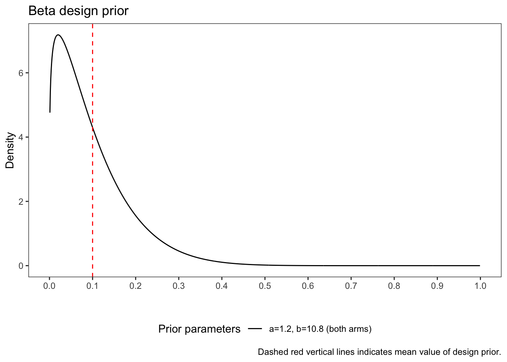
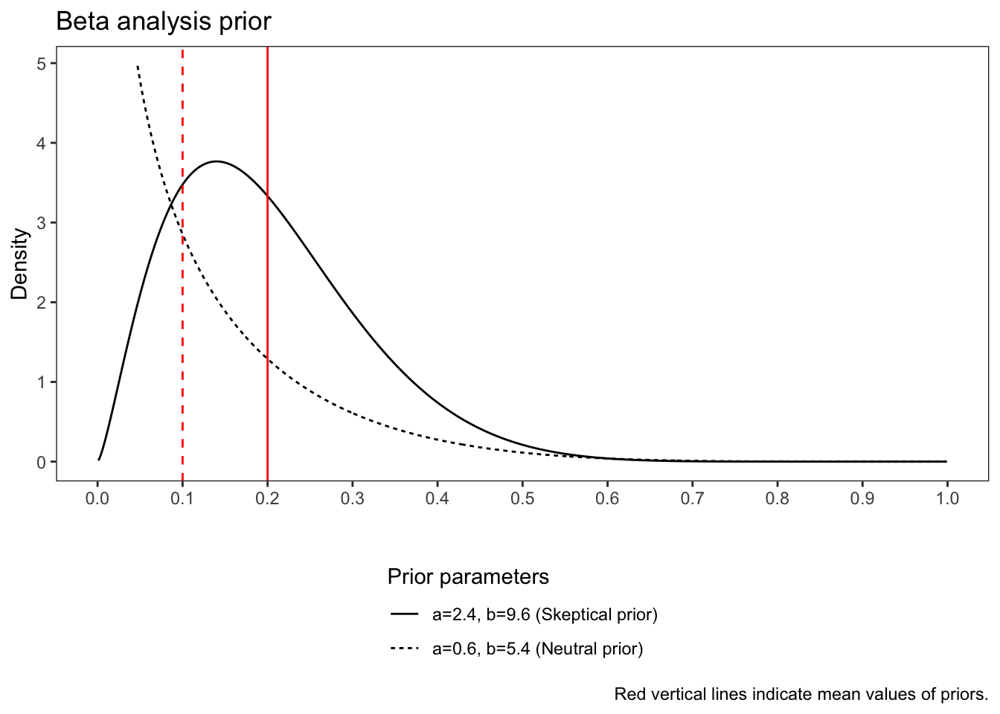

flowchart TD A[2:1 randomisation] --> B[Experimental group with TD proportion \np1 coming from design prior] A --> C[Control group with TD proportion \np0 coming from design prior] B ~~~ D[Interim analysis\n\nStop early:\nIf experimental group has a high predictive probability of excessive discontinuation\notherwise randomise new patients until N_max is reached] C ~~~ D style A fill:white,color:black style B fill:white,color:black style C fill:white,color:black style D fill:white,color:black,stroke-dasharray: 5 5
This vignette was motivated by a study of CTU Bern (1938). It is an example of a Bayesian phase-II trial design with interim threshold stopping using predictive probabilities ([1], [2]). The primary endpoint is a binary endpoint, say, treatment discontinuation (TD).
The trial is designed with early stopping decisions rules based on predictive probabilities that the intervention is non-safe, that is, a high probability of an excess TD proportion given interim data. We quantify the trial operations characteristics probability of stopping because of non-safety (stopping trial before maximal sample size is reached), probability of treatment discontinuation and the expected number of patients in experimental arm using a simulation approach.
1.1 Methods
1.1.1 Sample size
The sample size was fixed to \(N_{max}=36\) patients (24 patients in the experimental arm, 12 patients in the control arm) because of feasibility.
1.1.2 Study design
The following figure summarises the trial design. Suppose we randomise patients with a 2:1 allocation ratio to the experimental arm and the control arm. Let \(p_i\) be the TD proportion coming from a design prior \(\pi^d_i \sim Beta(a^d_i,b^d_i)\), \(p_i\), \(i=0,1\). The design prior represents the uncertainty of \(p_i\) at the design stage and might be different from the analysis prior. One interim analysis will be performed after the recruitment of \(N^{I}=n_{0}+n_{1}=18\) patients (\(n_{0}\) denotes the number of patients in the control arm and \(n_{1}\) denotes the number of patients in the experimental arm; The index \(I\) stands for ‘interim’) which corresponds to 50% of the fixed sample size.
1.1.3 Stopping criterium
The excessive threshold for stopping the trial was set to \(p_{max}=0.2\). This number was based on the design prior choice (see subsection ‘Design prior choice’). In brief, based on a discussion with clinical experts and available evidence the assumed mean average TD proportion was set to \(0.1\). A doubling of this number led to \(p_{max}=0.2\).
1.1.4 Statistical methods
Suppose that at the interim analysis in the experimental arm \(r_{1}\) discontinuation events are observed. If we assume that \(N_{max}=n_{max, 0}+n_{max, 1}\) is the planned sample size of the trial, then a remaining future \(m_{1}=n_{max, 1}-n_{1}\) will be recruited in the experimental arm with possible future events \(S_1\in\{0,\cdots, m_1\}\). Note that at each interim analysis the posterior distribution is Beta-distributed \(p_i|r_i,n_i \sim Beta(a_i+r_i, b_i+n_i-r_i)\) and \(S_1|r_1,n_1\) is Beta-binomial distributed \(S_1 \sim Betabinomal(m_1, a+r_1, b+n_1-r_1)\).
The trial is stopped early if \(PP>\theta_{S}\), for an upper discontinuation proportion threshold \(p_{max}\), \[ \begin{aligned} PP&=E\left[I\left\{ P\left(p_1>p_{max}|r_{1}, n_{1}, s_{1}\right)>\theta_{T_{Non-safe}}\right\}|r_{1}, n_{1}\right] \\ &=\sum_{s_1=0}^{m_1} I(P(p_1 > p_{max}|r_{1},n_1,s_1)>\theta_{T_{Non-safe}}) P(S_{1}=s_1|r_{1}, n_1). \end{aligned} \] That is, we stop the trial early if there is a high predictive probability \(\Theta_S\) that the discontinuation proportion in the experimental arm exceeds a upper threshold \(p_{max}\) given interim data and future events, otherwise the remaining 18 patients are randomised until the fixed sample size is reached.
Stopping boundaries are calculated for each combination of \(r_1\) (and thus \(m_1\)) given the maximal sample size \(N_{max}\) and the interim sample size \(N^I\). The tibble below shows the example of \(r_1=2\) and \(n_1=12\) for the skeptical prior. We set \(\theta_{T_{Non-safe}}=0.6\).
Show R code
p_max <- c(0.2)
# Prior information
prior_type <- "Skeptical"
a_1 <- 2.4
b_1 <- 9.6
x <- seq(0,1,0.001)
n_initial <- 12
r <- 0:n_initial
n_increase <- 12
n_max <- 24
n <- seq(n_initial, n_max, n_increase)
r <- 0:n_max
m <- n_max-r
#### Scenario
theta_T <- 0.6
data <- expand.grid(n=n, r=r) %>% arrange(n) %>%
filter(n>=r) %>% mutate(i=n_max-n+1)
data <- expandRows(data, count=3)
data <- data %>% group_by(n, r) %>%
mutate(m=n_max-n, ind=1, i=cumsum(ind)-1, ind=NULL)
data <- data %>%
mutate(PS1=dbbinom(i, size=m, alpha=a_1+r, beta=b_1+n-r),
Ti=1-pbeta(p_max, a_1+r+i, b_1+n_max-r-i),
ind=ifelse(Ti>theta_T, 1, 0), n_max)
data <- data %>% select(n_max, n, r, m, i, Ti, PS1, ind)
data %>% filter(n==12, r==2)# A tibble: 13 × 8
# Groups: n, r [1]
n_max n r m i Ti PS1 ind
<dbl> <dbl> <int> <dbl> <dbl> <dbl> <dbl> <dbl>
1 24 12 2 12 0 0.0881 0.139 0
2 24 12 2 12 1 0.190 0.241 0
3 24 12 2 12 2 0.334 0.241 0
4 24 12 2 12 3 0.500 0.180 0
5 24 12 2 12 4 0.661 0.109 1
6 24 12 2 12 5 0.793 0.0549 1
7 24 12 2 12 6 0.887 0.0235 1
8 24 12 2 12 7 0.945 0.00852 1
9 24 12 2 12 8 0.976 0.00257 1
10 24 12 2 12 9 0.990 0.000627 1
11 24 12 2 12 10 0.997 0.000117 1
12 24 12 2 12 11 0.999 0.0000148 1
13 24 12 2 12 12 1.00 0.000000971 1The predictive probabilities for each \(r_1\) are (with \(\theta_{S}=0.8\)):
Show R code
## Early stopping using predictive distribution
threshold_safety <- 0.8
data_pp <- data %>% group_by(n_max, n, r) %>% summarise(pp=round(sum(PS1*ind),6),
stop_pp=ifelse(pp>threshold_safety, 1, 0))
data_pp %>% filter(n==12)# A tibble: 13 × 5
# Groups: n_max, n [1]
n_max n r pp stop_pp
<dbl> <dbl> <int> <dbl> <dbl>
1 24 12 0 0.00552 0
2 24 12 1 0.0459 0
3 24 12 2 0.199 0
4 24 12 3 0.502 0
5 24 12 4 0.814 1
6 24 12 5 0.971 1
7 24 12 6 1 1
8 24 12 7 1 1
9 24 12 8 1 1
10 24 12 9 1 1
11 24 12 10 1 1
12 24 12 11 1 1
13 24 12 12 1 1The same calculation holds for the neutral prior and we get the following stopping boundaries
Show R code
stop_boundaries0 <- data_pp %>% filter(stop_pp==1) %>%
group_by(n_max, n) %>% summarise(r=min(r), stop=NULL)
stop_boundaries0$p_max <- p_max
stop_boundaries0$theta_T <- theta_T
stop_boundaries0$threshold_safety <- threshold_safety
stop_boundaries0$prior_type <- prior_type
stop_boundaries <- stop_boundaries0
# Prior information
prior_type <- "Neutral"
a_1 <- 0.6
b_1 <- 5.4
x <- seq(0,1,0.001)
n_initial <- 12
r <- 0:n_initial
n_increase <- 12
n_max <- 24
n <- seq(n_initial, n_max, n_increase)
r <- 0:n_max
m <- n_max-r
#### Scenario
theta_T <- 0.6
threshold_safety <- 0.8
data <- expand.grid(n=n, r=r) %>% arrange(n) %>% filter(n>=r) %>% mutate(i=n_max-n+1)
data <- expandRows(data, count=3)
data <- data %>% group_by(n, r) %>% mutate(m=n_max-n, ind=1, i=cumsum(ind)-1, ind=NULL)
data <- data %>% mutate(cond_postprob=dbbinom(i, size=m, alpha=a_1+r, beta=b_1+n-r),
Ti=1-pbeta(p_max, a_1+r+i, b_1+n_max-r-i),
ind=ifelse(Ti>theta_T, 1, 0), n_max)
data <- data %>% select(n_max, n, r, m, i, cond_postprob, Ti, ind)
## Early stopping using predictive distribution
data_pp <- data %>% group_by(n_max, n, r) %>% summarise(pp=round(sum(cond_postprob*ind),6),
stop_pp=ifelse(pp>threshold_safety, 1, 0))
stop_boundaries0 <- data_pp %>% filter(stop_pp==1) %>%
group_by(n_max, n) %>% summarise(r=min(r), stop=NULL)
stop_boundaries0$p_max <- p_max
stop_boundaries0$theta_T <- theta_T
stop_boundaries0$threshold_safety <- threshold_safety
stop_boundaries0$prior_type <- prior_type
stop_boundaries <- bind_rows(stop_boundaries, stop_boundaries0)
stop_boundaries %>% filter(n==12)# A tibble: 2 × 7
# Groups: n_max [1]
n_max n r p_max theta_T threshold_safety prior_type
<dbl> <dbl> <int> <dbl> <dbl> <dbl> <chr>
1 24 12 4 0.2 0.6 0.8 Skeptical
2 24 12 5 0.2 0.6 0.8 Neutral 1.1.4.1 Design prior choice
The design prior for the primary endpoint was chosen as based on clinical expert knowledge and available evidence. We assumed that the “true” TD proportion comes from a \(Beta(1.2,10.8)\) design prior which is centered at a TD proportion of 10% with a 90% uncertainty range from 0.9% to 26.6%. The probability that the discontinuation rate is larger than 20% is 12.2%. The design prior has weight of 12 patients, that is, half of planned patients in the experimental arm.

1.1.4.2 Analysis prior choice
As analysis priors we decided for two scenarios.
- A skeptical Beta(2.4, 9.4) analysis prior for the experimental arm which is centered on a TD proportion of 20% with a probability of excessing 40% of \(5.6\)%.
- A neutral Beta(0.6, 5.4) analysis prior for the experimental arm which is centered on a discontinuation proportion of 10%.

1.1.5 Simulation study
We set up simulation study to quantify operations characteristics
- Probability of stopping because of non-safety (stopping trial before \(N_{max}\) is reached),
- Probability of treatment discontinuation (declaring treatment discontinuation including \(N_{max}\)),
- Expected number of patients in experimental arm
with the following parameters
Beta design priors: Boths arms: a=1.5, b=13.5. True \(p_i\) are drawn from the design priors,
Beta analysis priors: Boths arms: Skeptical: a=2.4, b=9.6. Neutral: a=0.6, b=5.4,
Maximal discontinuation proportion threshold \(p_{max}\): 0.2,
Number of randomised patients in the experimental arm at first interim analysis \(n_1\): 12,
Number of randomised patients in the control arm at first interim analysis \(n_1\): 6,
Excessive discontinuation probability for posterior distribution \(\theta_{T}\): 0.6,
Safety threshold for predictive distribution \(\theta_{S}\): 0.8,
Number of simulation runs: 10’000,
Maximal sample size \(N_{max}\): 12/24 patients per arm,
Increase of sample size \(n_{increase}\): 6/12 patients per arm.
1.2 Results
The results from our simulation study are:
| Operations characteristics | \(N_{max}=36\) |
|---|---|
| Probability of intolerable trial (skeptical prior) | 15.8% |
| Probability of intolerable trial (neutral prior) | 8.2% |
| Probability of early stopping because of non-safety | 7.7% |
| Expected number of patients in experimental arm | 23.1 |
| Stopping boundaries | |
|---|---|
| Stopping boundary interim analysis (skeptical prior) | 4+ |
| Intolerable trial at trial end (skeptical prior) | 6+ |
| Intolerable trial at trial end (neutral prior) | 7+ |